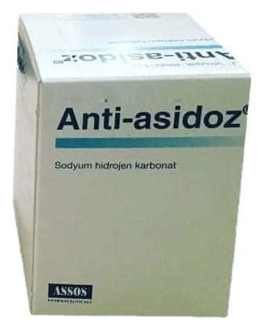

Anti-Asidoz Yumuşak Jelatin Kapsül, 180 Adet

Ne için kullanılır
KT · Bölüm 1 ANTI ASIDOZ®vücut sıvılarını alkalileştirici ilaçlar (antiasitler) sınıfına ait tıbbi bir üründür ve içerisinde Sodyum bikarbonat bulunur.
Her kutuda her biri 10 yumuşak jelatin kapsül içeren blisterlerde toplam 100, 180 ve 270 yumuşak jelatin kapsül bulunan formda kullanıma sunulmaktadır.
Aşağıdaki hastalıkların tedavisinde kullanılır:
Özellikle kronik böbrek yetmezliğinde olmak üzere değişik nedenlere bağlı kandaki asitlik derecesinin yüksek olması durumunu tedavi etmek için kullanılır.